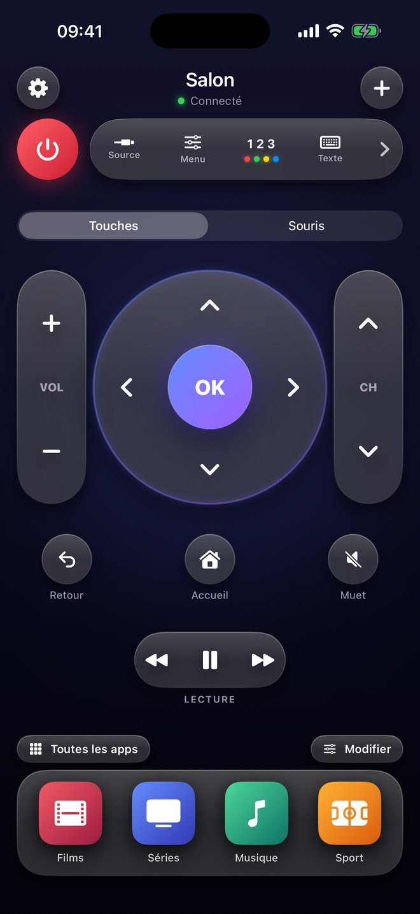
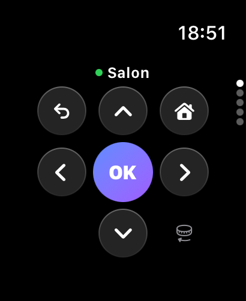
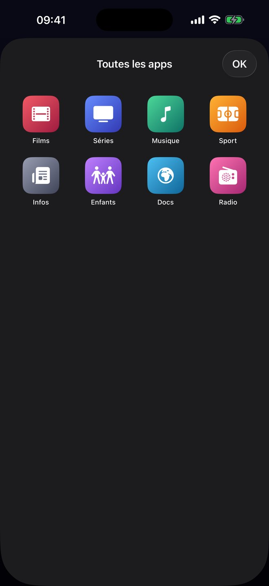
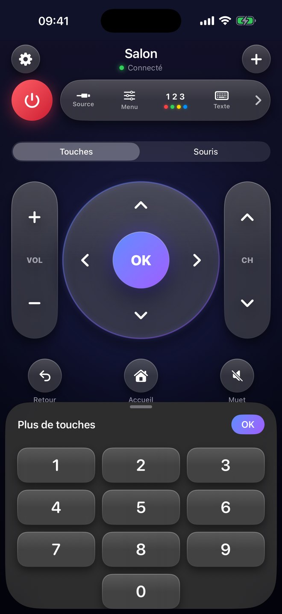
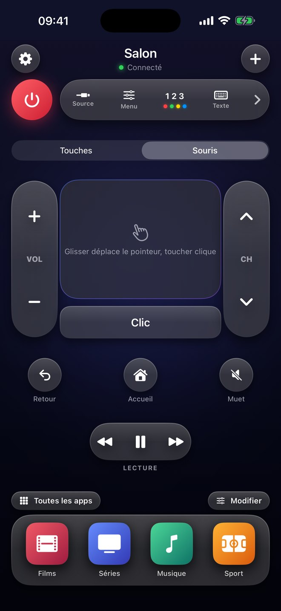
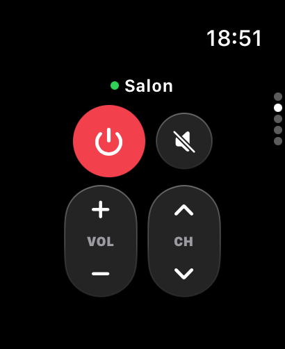
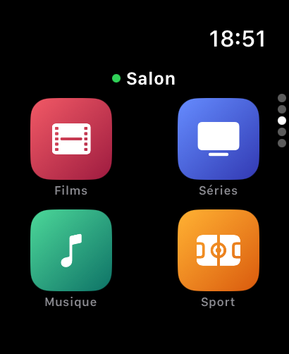

Appuyez.
Votre télé réagit.
Teek Taike transforme votre iPhone et votre Apple Watch en télécommande. Des touches qui ressemblent à de vraies touches, et vos apps sur grand écran d’un simple toucher.
Mon téléviseur est-il compatible ?En voir plusBientôt sur l’App Store pour iPhone et Apple Watch.


Comme une vraie télécommande.
En plus beau, et toujours sur vous. Tout ce qu’il faut pour la soirée sur un seul écran, sans défiler.
Des touches à toucher
Le volume et les chaînes sont de longues touches à bascule qui s’inclinent. La croix directionnelle s’enfonce et chaque touche clique.
Des apps d’un toucher
Lancez vos apps de streaming et toutes les autres apps de votre téléviseur. Vos favorites sont dans la barre du bas.
Boutons de l’iPhone pour le volume
Tant que l’app est ouverte, les boutons de volume de l’iPhone règlent le téléviseur.
Siri et Raccourcis
« Volume plus avec Teek Taike », « Éteins la télé avec Teek Taike ». Aussi dans le Centre de contrôle et comme minuterie avec une automatisation.
Pavé tactile et clavier
Pour la recherche dans les apps et le navigateur du téléviseur : tapez au lieu de choisir chaque lettre.
Français, anglais, allemand
L’app parle la langue de votre iPhone. Passez d’un téléviseur à l’autre d’un glissement.



À votre poignet.
Avec l’Apple Watch, l’iPhone reste dans la poche. La couronne règle le volume, un glissement mène à Marche/Arrêt, aux chaînes et à vos apps.


Quels téléviseurs ?
Le téléviseur et l’iPhone doivent être sur le même Wi‑Fi. À la première connexion, le téléviseur demande une fois « Autoriser ? », ensuite tout fonctionne tout seul.
Samsung Smart TV
Avec Tizen, à partir des modèles 2016 environ. Testé avec un Samsung QLED de 2025. Pour l’allumer via le Wi‑Fi, activez « Allumer avec un mobile » (Paramètres › Général › Réseau › Paramètres experts).
D’autres marques
D’autres téléviseurs arriveront par une mise à jour une fois testés sur de vrais appareils.
Les apps appartiennent à leurs éditeurs
Les apps fonctionnent sur votre téléviseur. Teek Taike ne fait que les lancer et n’a aucun lien avec les fabricants ou les éditeurs.
Vos données restent chez vous.
Pas de compte, pas de publicité, pas d’analyse, pas de suivi. L’app communique directement avec votre téléviseur sur le Wi‑Fi.
Ce qui est enregistré
Uniquement sur votre iPhone : le nom et l’adresse de vos téléviseurs et l’autorisation accordée avec « Autoriser ». Supprimez le téléviseur ou l’app, et tout est effacé.
La seule connexion à Internet
Pour les icônes, Teek Taike interroge la recherche publique de l’App Store d’Apple avec le nom de l’app. Aucune donnée vous concernant n’est envoyée.